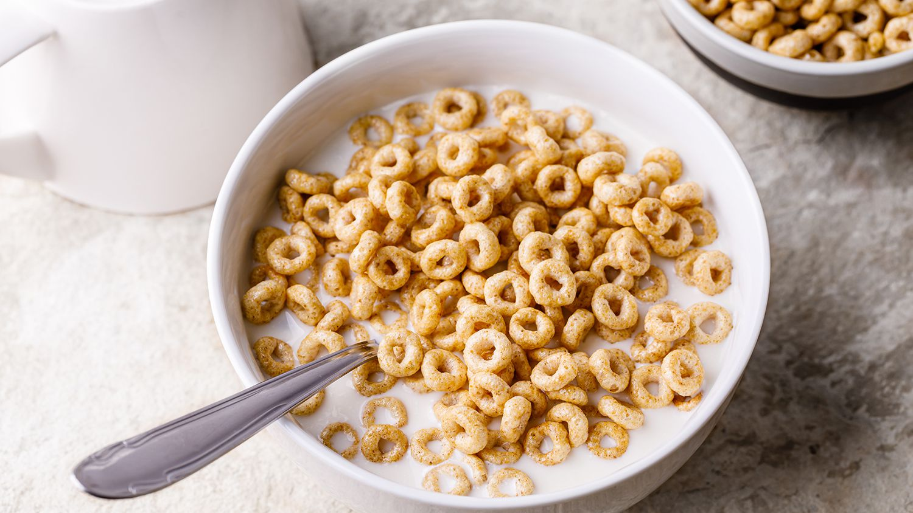

Cereal

Description
This will be a recipe showing you how to make your Morning Cereal
This will be an Excellent and Delicious experience and I hope you enjoy it!
Ingredients
- Kellogs Frosties!
- Milk
- Spoon
- Bowl
- You!
Steps:
- Get an empty clean bowl
- Pour a good amount of cereal into it
- Pour Milk into the bowl with the cereal. (Not the Other Way Around)
- Get your spoon and dig it!
- Enjoy!